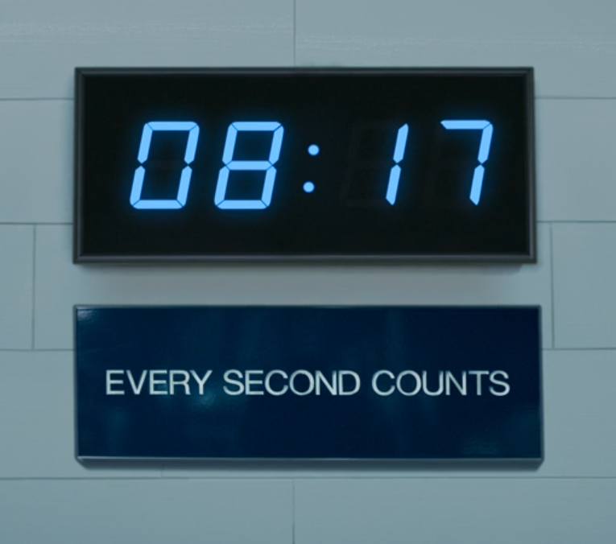

She began to breathe
To breathe at the thought of such freedom
Stood and whispered to her child, "belong"
| David Austin |
|---|
| November 18, 2025 |
―From The Lowdown, created by Sterlin Harjo

Dawes Commission Rolls

Education is the one thing they can’t take away from you.
Sam Jr, Malacha, Jack, Wauhillau (and Hiawana)
―Michael Stipe, R.E.M. She began to breatheTo breathe at the thought of such freedomStood and whispered to her child, "belong"
357819204
3+5+7+8+1+9+2+0+4=39

Group theory is how we formalize symmetry
―Bill Dunbar
To be successful, you have to be lucky, but you can make your own luck.
―Ron Stern
―Caitlin Canty Friends are speeding by so fastDriving their dreams past your little homeWhile you’re stacking green woodAnd if things go like they shouldYou’ll watch it dry out goodGo up in smoke
To be successful, you have to be lucky, but you can make your own luck.
―Ron Stern
Embrace friction
Education is one thing you can’t be given
―From The Bear
Be open and curious
Be generous
Express gratitude
The place you find yourself continually challenged often contains a gift.
―Mary Oliver Tell me, what is it you plan to dowith your one wild and precious life?